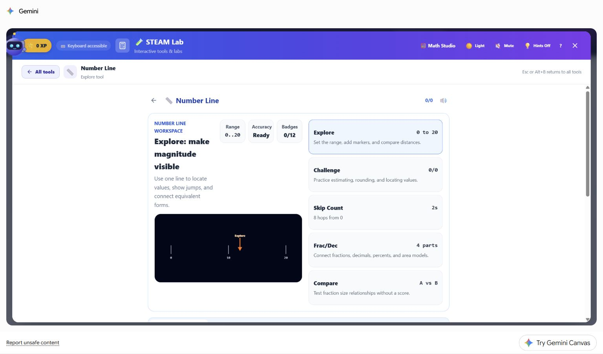

The STEAM Lab. Find and share the right tool
Use the live STEAM Lab catalog to find, verify, and share a focused interactive tool without relying on a stale printed count or inferred link.
- Best for
- Any teacher
- Typical use
- 8 minutes
Search the guide
Type one or more words to search every chapter.
The STEAM Lab is the largest collection in AlloFlow, with interactive tools across thirteen subject areas, from a water-cycle simulation to a titration burette to a disproportionality analyzer. The generated registry changes as tools are added or retired, so this manual intentionally does not hard-code a total. Use the live STEAM Lab catalog for the current list.
What is in there
The current registry groups tools under Arts and Music; Computing, AI, and Digital Literacy; Data, Statistics, and Probability; Earth and Space Science; Ecology, Environment, and Animals; Engineering and Design; Geometry and Measurement; Human Body, Health, and Safety; Learning and Behavioral Science; Life Science and Genetics; Life Skills, Careers, and Economics; Sports and Movement Science; and Strategy Games.
Where the live list is. Open the STEAM Lab from Learning Tools on the Launch Pad or from the STEAM Lab entry in the tool list, then search or browse by area. That live catalog is the source of truth for what the current build exposes.
Do not confuse this with Find a tool on the AlloFlow website. That page is a finder for the lesson-building tools, the ones that turn source material into glossaries, adaptations and quizzes, and it usefully filters by whether a tool needs a source, needs AI, or runs in Gemini Canvas. It does not list the STEAM Lab's simulations, so searching it for "titration" or "solar system" finds nothing.
Finding a tool: three routes
![The STEAM Lab tool browser. A search box sits at the top, followed by a box asking "What do you want to learn about?" with an AI Suggest tools button, then subject filter chips for All, Science, Math, Engineering, Creative, Applied, and Games. Below them a Math Fundamentals group shows tool cards including Number Line, Area Model, Arithmetic Strategy Studio, Fraction Lab, Math Manipulatives, and Multiplication Table, each with a one-line description. A Keyboard accessible badge sits in the header.](../docs/teacher-guide/assets/live-screenshots/17-current-v1.2-steam-lab.png)
The search box and the subject chips are the first two routes. The tool count shown in your build will differ from this capture as tools are added.
Search, if you know roughly what you want. Open the STEAM Lab and type in its search box. It matches tool names, descriptions, topics, and hand-written aliases, so "photosynthesis" finds the tree lab even though that word is not in its title.
Browse by area, if you are planning a unit. The lab's own subject groupings are the fastest way to see everything available for a topic you are about to teach.
Ask by voice or the command palette, if your hands are busy: press Ctrl+K and type the tool name, or say it aloud with voice control on.
Putting a tool in front of students
This is the part worth learning once, because it works for every tool.
Use the direct link shown by the current catalog or deployment. Many discoverable tools expose a focused address; for example, the public catalog currently links Water Cycle at /water-cycle. Copy the link from the live catalog or open tool instead of guessing a slug, because aliases, availability, and hostnames can change. The public standalone route does not ask for an AlloFlow account, but an LMS, district gateway, Gemini environment, or other surrounding platform may require its own sign-in.
Preview the copied link in a student-equivalent browser profile before sharing it. Confirm that it opens the intended tool, does not expose a teacher workspace, and works under the school's filtering and sign-in rules.
Or share the whole lab by sending the app link and telling students which tool to open. Use the direct link when you want them in one place; use the app link when the activity is "explore three of these."
What to expect from any tool

Most tools follow this shape: a named workspace, a set of modes rather than a single activity, and a clearly marked way back out. Note the keyboard route stated in the corner.
The interface runs in the browser, but data paths are feature-specific. Many simulations compute locally. AI extras, online lookups, live coordination, camera or microphone features, imports, LMS launches, and configured school services can use a network or create records elsewhere. Check the tool's disclosure and the approved deployment before entering student-related content.
AI is optional for many core simulations, not necessarily every feature. When no backend is connected, the lab can show an AI extras: off notice and AI-dependent hints, coaching, generation, or drills remain unavailable. Verify that the exact activity you plan to use has a complete non-AI path, and keep a fallback when it does not.
They are instruments, not answer keys. The tools show what happens; the interpretation is the lesson. A simulation that produces a surprising result is usually the most valuable moment in the class, not a bug to be fixed.
Fullscreen and accessibility vary by tool. Many visual tools provide a fullscreen control, and many expose keyboard or alternate interaction routes. Test the exact tool with keyboard, zoom, reduced motion, screen-reader or text alternatives, and the students' real devices. Do not infer conformance for the whole catalog from one tool.
Three ways teachers actually use them
As a demonstration. Project one tool, drive it yourself, and narrate. Fastest to plan, and the fullscreen control exists for exactly this.
As a station. Send a verified direct link for one tool to a group and give them a question to answer with it. Test every link and provide a short title so students know they reached the intended station.
As the evidence step in a lesson. Build the lesson in AlloFlow as usual, then send students to a tool to gather the observation the lesson asks them to explain. Some tools keep local progress or support an export, but the catalog is not a universal class gradebook. Decide in advance how students should capture and submit evidence in the approved system.
When something does not work
Common causes include a tool that did not finish loading, blocked assets or APIs, unavailable permissions, unsupported graphics, an AI-dependent option with no backend, or a stale direct link. Protect any local work, check the visible error and required permissions, retry the verified catalog route, then use the full recovery sequence in Troubleshooting.
For leaders planning wider use
Tool links are an easy way to hand teachers something concrete: pick three tools for a grade band and send three verified addresses. The public standalone routes may not require AlloFlow rostering, but the school still needs to approve the host, device support, permissions, network paths, data handling, and any connected AI or external service. Use Privacy and responsible AI for that review.